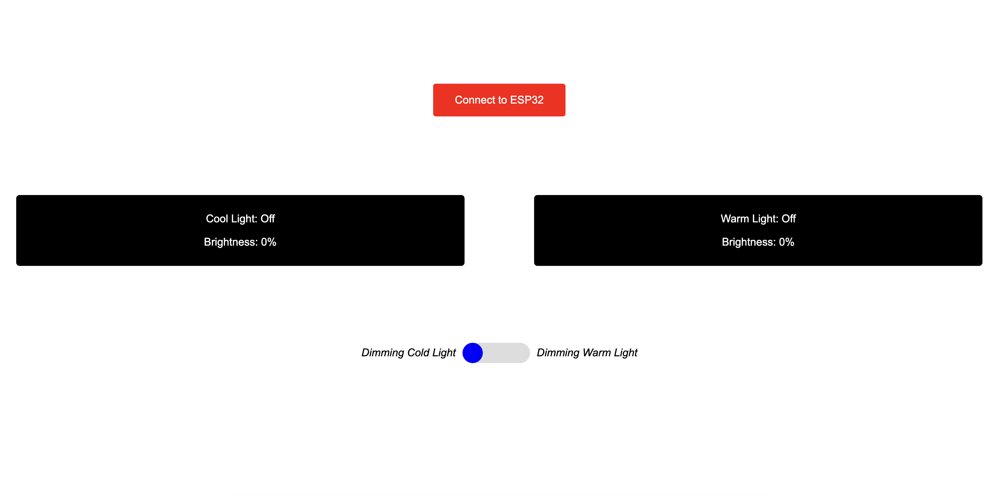
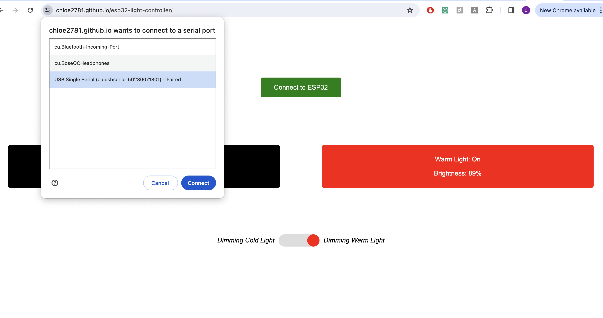
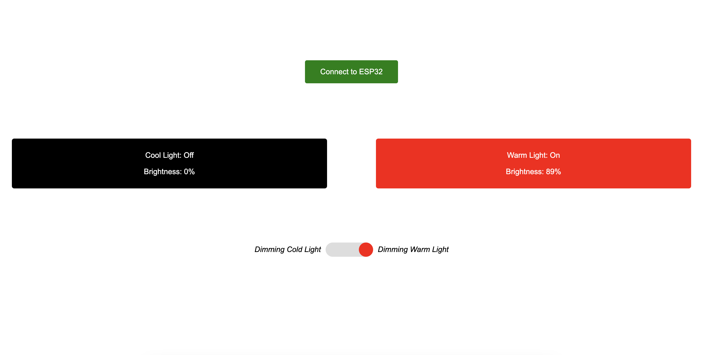

For me, this exploration took the shape of a seemingly normal object transformed into a signal of creativity: a cardboard enclosure, housing an array of electronics, that brought to life a miniature illuminated scene reminiscent of a cozy dwelling. This project, crafted for my Creative Embedded Systems class, was not just an assignment; it was a journey into the blend of art, technology, and everyday life.
The inspiration for this project stemmed from the desire to create something visually appealing, interactive, and meaningful, using the ESP32 TTGO T-display along with a set of simple components: buttons, LEDs, and a potentiometer. The goal was to craft an interactive device that not only serves a functional purpose but also evokes a sense of wonder and curiosity.
The core of my project, the ESP32 TTGO T-Display, is more than just a microcontroller. It's the brain that orchestrates the interaction between the user and the lighting system. Utilizing the Arduino IDE, I developed a firmware that listens for button presses to toggle light states and reads potentiometer values to adjust brightness.
Fig 1: The initial setup of ESP32 with components on the breadboard.
The choice of enclosure was as much a part of the project as the electronics themselves. A cardboard packaging from Costco Apple Sauce was repurposed into a little house, complete with slots for windows. This choice of material and design was not accidental; it reflects the project's ethos of finding beauty and utility in the simplest of things.

Fig 2: The cardboard enclosure, designed to mimic a cozy house, housing the electronic components.

Fig 3: The cardboard enclosure, potentiometer side.

Fig 4: The cardboard enclosure, dimming setting switch.

Fig 5: The cardboard enclosure, peaking into the enclosure.

Fig 6: The cardboard enclosure, the back, where the USB-C cable connects to the ESP32.

Fig 7: The cardboard enclosure, top view, main on/off buttons.
Inside this cardboard home, the electronics come to life, creating a warm glow through the windows, mimicking the inviting ambiance of a home. The interplay of light and shadow through the cutouts created a visually stunning effect.
To extend the interaction beyond the physical device, I developed a web-based UI that connects to the ESP32 via a serial connection. This interface not only allows remote control of the lights but also displays real-time feedback on their status and brightness levels. The design of the UI mirrors the physical device's warmth and simplicity, with intuitive controls and visual indicators that enhance the user experience.
The integration between the hardware and the web UI showcases the interactivity, allowing users not only to control the device remotely but also to visualize its status through a digital interface.
By detailing these technical aspects, I hope to provide insights into the complexity and beauty of working with interactive devices. The synergy between hardware and software in projects like this one offers endless possibilities for creativity and innovation.
Fig 8: The web-based user interface for controlling the light settings, no serial connection.
Fig 9: The web-based user interface for controlling the light settings, establishing serial connection.
Fig 10: The web-based user interface for controlling the light settings, only warm lights on.

Fig 11: The web-based user interface for controlling the light settings, both cool and warm lights on.
Every project has its hurdles, and this one was no exception. From the complexity of serial communication to the nuances of web development, each challenge was a learning opportunity. Perhaps the most valuable lesson was the importance of user experience design, both in the physical and digital realms. Crafting an interface that is both intuitive and enjoyable requires a deep understanding of the user's interaction with both the device and the software.